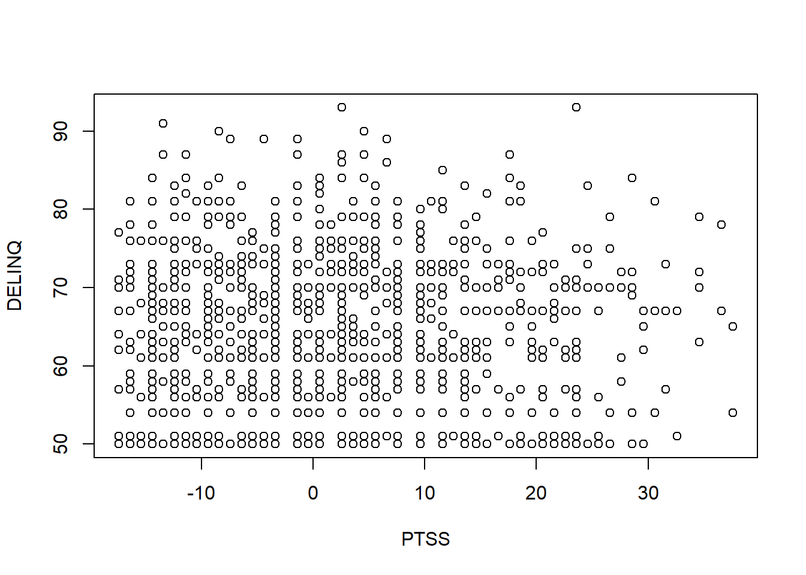
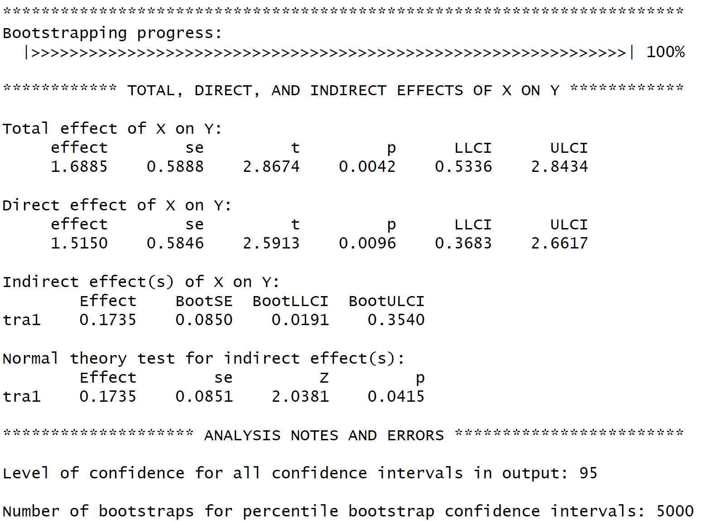
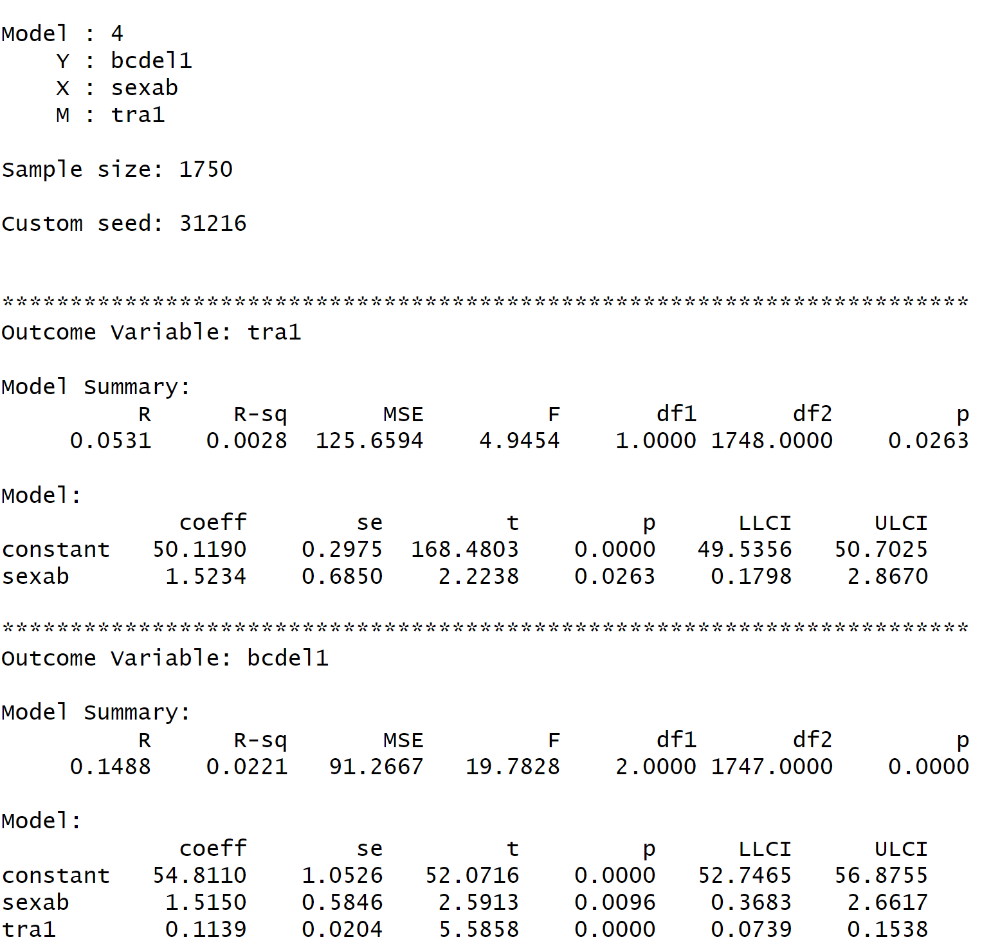

Code
library(foreign)
library(dplyr)
library(processR)Barboza-Salerno
Mediation analysis can be conducted using the processR package. We will only examine the most simple model, Hayes Model 4.
Note that there are many many packages for mediation analysis in R. And, it can be very frustrating. There is a package called processr and a package called processR. Also, note below that I included the code written by Andrew Hayes that we downloaded previously which is called process.R. This code is required to run the models using process!! The code is here and by invoking the source statement it tells R to run the code contained in the R file on your hard drive. Again, don’t let these nuances shy you away from using R, it becomes easy to identify the issues with experience.
I am going to use the same dataset we used in the moderation example. However, we will test whether the variable associated with symptoms of post-traumatic stress (tra1) mediates the association between experiencing child sexual abuse (sexab) and delinquent behaviors.
If you are a PhD student wanting to know more about how to estimate these models in R for your paper, check out this website.
********************* PROCESS for R Version 4.3.1 *********************
Written by Andrew F. Hayes, Ph.D. www.afhayes.com
Documentation available in Hayes (2022). www.guilford.com/p/hayes3
***********************************************************************
PROCESS is now ready for use.
Copyright 2020-2023 by Andrew F. Hayes ALL RIGHTS RESERVED
Workshop schedule at http://haskayne.ucalgary.ca/CCRAM
Remove missingness (na)
The conceptual model that illustrates those relationships is provided below. For the simple mediation model, both conceptual and statistical diagrams are the same. NOTE that I changed the model number from 1 to 4, see the Hayes macro template I provided to you in the lecture.
Note that by including the \n between the space in the word “Sexual Abuse” I am telling R to mimic a hard carriage return so that the words appear on different lines.
Notice I used the option rady to increase the y dimension of the box so that the words “Sex Abuse” will fit. Try running the code without the option to demonstrate the difference in output.
Note m use of the package processR below.
Note that we must remove missing values before the model will run. This is part of the ‘trial and error’ common in R programming.
Below is the same code we used before to mean center the variable for PTSS (tra1).
Below is a quick plot using Base R to visualize the variables.



The Total effect of X on Y: is the effect of sexual abuse on delinquent behavior. The effect is 1.689 which is significant at the \(p < .05\) level. The interpretation is that youth who who have experienced sex abuse have about 1.689 more delinquent acts on average compared to those who have not experienced sexual abuse. The total effect is comprised of the direct and indirect effect.
The direct effect labeled Direct effect of X on Y: summarizes the effect of experiencing sex abuse on delinquent behavior controlling for post-traumatic stress symptoms. The interpretation is that youth who who have experienced sex abuse have about 1.515 more delinquent acts on average compared to those who have not experienced sexual abuse controlling for symptoms of PTS.
The indirect effect labeled Indirect effect(s) of X on Y: is the mediation effect. There is evidence here that PTS mediates the effect of sexual abuse on delinquent behavior. Note that the mediation effect i
---
title: "Simple Mediation"
author: "Barboza-Salerno"
---
```{r setup, include=FALSE}
knitr::opts_chunk$set(warning = FALSE, message = FALSE)
```
Mediation analysis can be conducted using the processR package. We will only examine the most simple model, Hayes Model 4.
::: {.callout-note}
Note that there are many many packages for mediation analysis in R. And, it can be very frustrating. There is a package called `processr` and a package called `processR`. Also, note below that I included the code written by Andrew Hayes that we [downloaded previously](https://haskayne.ucalgary.ca/CCRAM/resource-hub) which is called `process.R`. This code is required to run the models using `process`!! The code is here and by invoking the `source` statement it tells R to run the code contained in the R file on your hard drive. Again, don't let these nuances shy you away from using R, it becomes easy to identify the issues with experience.
:::
```{r}
library(foreign)
library(dplyr)
library(processR)
```
I am going to use the same dataset we used in the [moderation example](example/moderation.qmd). However, we will test whether the variable associated with symptoms of post-traumatic stress (tra1) mediates the association between experiencing child sexual abuse (sexab) and delinquent behaviors.
::: {.callout-note}
If you are a PhD student wanting to know more about how to estimate these models in R for your paper, check out [this website](https://rpubs.com/gganggang2/1121413).
:::
```{r}
setwd("C:/Users/barboza-salerno.1/Downloads/")
source("process.R")
mediation_example = tibble::as_tibble(read.spss("moderation.sav", use.value.labels = F, to.data.frame = T))
```
Remove missingness (na)
```{r}
mediation_example <- mediation_example %>%
dplyr::filter(!is.na(tra1) & !is.na(sexab) & !is.na(bcdel1))
```
## The conceptual model
The conceptual model that illustrates those relationships is provided below. For the simple mediation model, both conceptual and statistical diagrams are the same. **NOTE** that I changed the model number from 1 to 4, see the Hayes macro template I provided to you in the lecture.
::: {.callout-note}
Note that by including the `\n` between the space in the word "Sexual Abuse" I am telling R to mimic a hard carriage return so that the words appear on different lines.
:::
```{r}
labels=list(X="Sexual\nAbuse",M="PTSS",Y="DELIN")
```
Notice I used the option `rady` to increase the y dimension of the box so that the words "Sex Abuse" will fit. Try running the code without the option to demonstrate the difference in output.
Note m use of the package `processR` below.
```{r}
processR::pmacroModel(4,labels=labels, rady = 0.07)
```
```{r}
processR::statisticalDiagram(4,labels=labels, rady = 0.07)
```
Note that we must remove missing values before the model will run. This is part of the 'trial and error' common in R programming.
Below is the same code we used before to mean center the variable for PTSS (tra1).
```{r}
mediation_example$tra1_mean <-
mediation_example$tra1 - mean(mediation_example$tra1, na.rm = T)
```
Below is a quick plot using `Base R` to visualize the variables.
```{r}
plot(y=mediation_example$bcdel1,
x=mediation_example$tra1_mean,
xlab = "PTSS", ylab = "DELINQ")
```
```{r}
cor(mediation_example$tra1_mean, mediation_example$bcdel1)
```
```{r results = 'hide'}
result <- process(
data = mediation_example,
y = "bcdel1",
x = "sexab",
m = "tra1",
total = 1,
normal = 1,
model = 4,
seed = 31216)
```


# Interpretation
The `Total effect of X on Y:` is the effect of sexual abuse on delinquent behavior. The effect is 1.689 which is significant at the $p < .05$ level. The interpretation is that youth who who have experienced sex abuse have about 1.689 more delinquent acts on average compared to those who have not experienced sexual abuse. The total effect is comprised of the direct and indirect effect.
The direct effect labeled `Direct effect of X on Y:` summarizes the effect of experiencing sex abuse on delinquent behavior controlling for post-traumatic stress symptoms. The interpretation is that youth who who have experienced sex abuse have about 1.515 more delinquent acts on average compared to those who have not experienced sexual abuse controlling for symptoms of PTS.
The indirect effect labeled `Indirect effect(s) of X on Y:` is the mediation effect. There is evidence here that PTS mediates the effect of sexual abuse on delinquent behavior. Note that the mediation effect i
# Additional Resources
- MacKinnon, D. P. (2008). Introduction to statistical mediation analysis. New York, NY: Lawrence Erlbaum Associates.
- Revelle, W. (2017) How to use the psych package for mediation/moderation/regression analysis. [.pdf](http://personality-project.org/r/psych/HowTo/mediation.pdf)
- Rosseel, Y. (2012). Lavaan: An R package for structural equation modeling and more. Version 0.5–12 (BETA). Journal of statistical software, 48(2), 1-36. [website](http://lavaan.ugent.be/)
- Rucker, D. D., Preacher, K. J., Tormala, Z. L., & Petty, R. E. (2011). Mediation analysis in social psychology: Current practices and new recommendations. Social and Personality Psychology Compass, 5(6), 359-371. [.pdf](http://quantpsy.org/pubs/rucker_preacher_tormala_petty_2011.pdf)